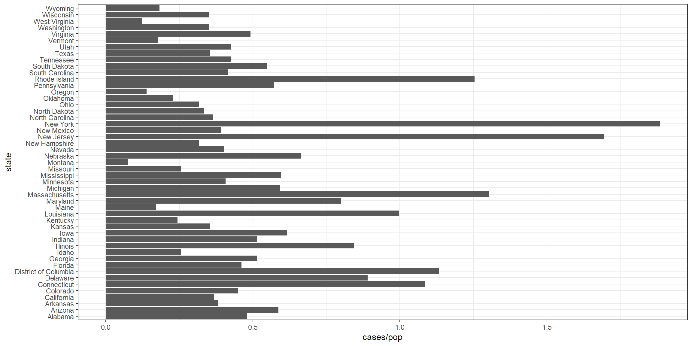
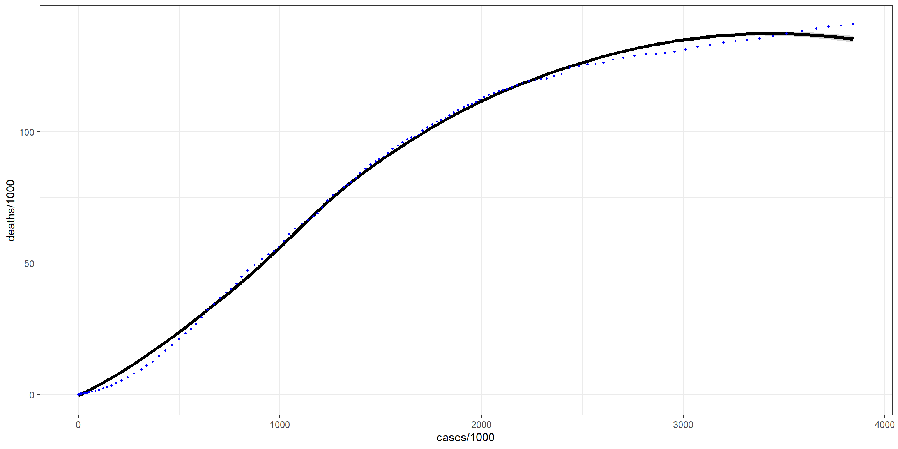

New York Times
prop_state <- left_join(state_prop, states, by = c("state", "state_abbr")) %>%
filter_yesterday() %>% select(- date) %>% covid_prop()
ny_county_prop <- county_prop %>% filter_yesterday() %>% newyork()
prop_county_ny <- left_join(ny_county_prop, ny_county, by = c("state", "state_abbr", "county")) %>%
select(- date, - state_abbr) %>% covid_prop()Find Distribution

These plots visualize the top five states with covid cases and deaths per population.
Maps
ggplot(data = prop_state) +
geom_sf(aes(geometry = geometry), fill = NA, color = "Black") + guides(color = FALSE) +
geom_text(aes(label = (as.numeric(cases)), geometry = geometry), stat = "sf_coordinates", color = "black", size = 2.5) +
theme_bw() +
theme(axis.title.x=element_blank(), axis.title.y=element_blank())This plot shows the exact value of cases from COVID-19.
ggplot(data = prop_state) +
geom_sf(aes(geometry = geometry), fill = NA, color = "Black") + guides(color = FALSE) +
geom_text(aes(label = (as.numeric(case_pop)*100), geometry = geometry), stat = "sf_coordinates", color = "black", size = 2.5) +
theme_bw() +
theme(axis.title.x=element_blank(), axis.title.y=element_blank())
This plot shows the percent of the population that has tested positive from COVID-19.
ggplot(data = prop_state) +
geom_sf(aes(geometry = geometry), fill = NA, color = "Black") + guides(color = FALSE) +
geom_text(aes(label = (as.numeric(deaths)), geometry = geometry), stat = "sf_coordinates", color = "black", size = 2.5) +
theme_bw() +
theme(axis.title.x=element_blank(), axis.title.y=element_blank())This plot shows the exact value of deaths from COVID-19.
ggplot(data = prop_state) +
geom_sf(aes(geometry = geometry), fill = NA, color = "Black") + guides(color = FALSE) +
geom_text(aes(label = (as.numeric(death_pop)*100), geometry = geometry), stat = "sf_coordinates", color = "black", size = 2.5) +
theme_bw() +
theme(axis.title.x=element_blank(), axis.title.y=element_blank())
This plot shows the percent of the population that has died from COVID-19.
New York
ggplot(data = prop_county_ny) +
geom_sf(aes(geometry = geometry), fill = NA, color = "Black") +
guides(color = FALSE) +
geom_text(aes(label = (as.numeric(case_pop)*100), geometry = geometry),
stat = "sf_coordinates", color = "black", size = 2) +
theme_bw() +
theme(axis.title.x=element_blank(), axis.title.y=element_blank())This plot shows the percent of the population that has tested positive for COVID-19 in the counties of New York.
ggplot(data = prop_county_ny) +
geom_sf(aes(geometry = geometry), fill = NA, color = "Black") +
guides(color = FALSE) +
geom_text(aes(label = (as.numeric(death_pop)*100), geometry = geometry),
stat = "sf_coordinates", color = "black", size = 2) +
theme_bw() +
theme(axis.title.x=element_blank(), axis.title.y=element_blank())This plot shows the percent of the population that has died from COVID-19 in the counties of New York.
Percentage of cases who died
ggplot(data = prop_state) +
geom_sf(aes(geometry = geometry), fill = NA, color = "Black") +
guides(color = FALSE) +
geom_text(aes(label = (as.numeric(death_case)*100), geometry = geometry), stat = "sf_coordinates", color = "black", size = 2.5) +
theme_bw() +
theme(axis.title.x=element_blank(), axis.title.y=element_blank())This plot shows the percent of the people that test positive die from COVID-19.
ggplot(data=us, aes(x = cases/1000, y = deaths/1000)) +
geom_smooth(color = "black", size = 1.5, method = "loess", formula = y ~ x) +
geom_jitter(color = "blue", size = .75) +
theme_bw()
This plot shows how the cases and deaths relate and compare. I divided both cases and deaths by 1000 so its per thousand cases and per thousand deaths.
New York
ggplot(data = prop_county_ny) +
geom_sf(aes(geometry = geometry), fill = NA, color = "Black") +
guides(color = FALSE) +
geom_text(aes(label = (as.numeric(death_case)*100), geometry = geometry),
stat = "sf_coordinates", color = "black", size = 2) +
theme_bw() +
theme(axis.title.x=element_blank(), axis.title.y=element_blank())This plot shows the percent of the people that test positive die from COVID-19 in the counties of New York.
Data Tables
States
prop_state %>%
select(state, cases, deaths, pop, case_death, case_pop, death_pop, death_pop, death_case) %>%
datatable(caption = 'This Tibble shows COVID-19 data in the states in the USA for yesterday',
class = 'cell-border stripe',
rownames = FALSE,
filter = 'top',
extensions = 'Buttons',
options = list(buttons = c('copy', 'csv', 'pdf'),
pageLength = 5,
autoWidth = TRUE,
dom = 'Bfrtip'))Past Two Weeks
us %>% filter_biweek() %>%
datatable(caption = 'This Tibble shows COVID-19 data in the USA for the last 2 weeks',
class = 'cell-border stripe',
rownames = FALSE,
filter = 'top',
extensions = 'Buttons',
options = list(buttons = c('copy', 'csv', 'pdf'),
pageLength = 5,
autoWidth = TRUE,
dom = 'Bfrtip'))## [1] "Last updated: Jul 21 2020"